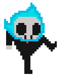
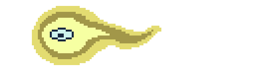

Este proyecto es un videojuego 2D pixel-art hecho en Unity. Fue realizado por Bazu, que lo integran Noa Ortiz (@050.noah), Ignacio Espinoza (@redaix) y Andrea Figueroa. Actualmente, el proyecto solo consta de una versión beta, pero se busca hacer un remake en un futuro cercano.

Rhythm in Dungeon es un juego que consta de dos pantallas de juego, que abarca tanto la jugabilidad de puzle como la de ritmo. Nace de la inspiración de juegos como “Crypt of the NecroDancer”,
“Hollow knight”, “Helltaker” y “Muse dash”, siendo estos dos últimos nuestras mayores referencias. En “Helltaker”,
rescatamos la modalidad de puzles que posee, donde debes mover obstáculos para abrirte paso de forma estratégica teniendo en cuenta una cantidad limitada de movimientos;
y “Muse dash”, un juego de ritmo que usa las notas como si estuvieras golpeando enemigos al ritmo de la música.
Aparte de estos dos, nos apegamos mucho al concepto de “Nier: Automata”, que se especializa por tener una forma única de presentar distintas pantallas
del juego sin que sientas que has cambiado de juego.
Diseños iniciales juego
Diseños iniciales juego
Este es un juego de fantasía de calabozo cómico, donde Skull, un gerente apasionado por su trabajo es asesinado a causa del odio colectivo de todos los que lo rodeaban. Skull llega a parar al infierno y decide hacer lo que se le da mejor, así que se enfrentará a todos los gerentes demonios que encuentre y se convertirá en el mejor gerente} del infierno.
Bocetos personajes
Bocetos personajes
Bocetos personajes
Diseño inicial protagonista
Diseños finales protagonista
Nuestra idea principal consistia en hacer 9 niveles, los cuales representarian los pisos del infierno de Dante de la Divina Comedia, donde los enemigos serian representados
por personajes icónicos de cada círculo del infierno.
En cada nivel, tendrás que superar dos pantallas de puzle empujando calaveras para abrirte paso hasta la puerta al otro extremo de la sala, teniendo en cuenta una cantidad
limitada de movimientos para lograrlo; para luego ser transportado al escenario del jefe. En este punto, debes completar la canción para derrotar al jefe y poder pasar al
siguiente nivel. Con cada golpe correcto, aumentara el "fever" del personaje, y aumentara su llama, como tambien su contador de vida, por el contrario si fallas un golpe,
el "fever" bajara junto al contador.
Al ser solo una beta, consta de solo 1 nivel, con dos pantallas de puzle y una de ritmo.
Diseño inicial
Diseños finales jefe
Diseños finales jefe
Animaciones de efectos
Dentro de este proyecto, realice varias de las animaciones de llamas dentro del juego, como lo son las distintas llamas del protagonista, las calaveras, las almas de ritmo entre otras:
Algunos de los fondos finales:
Diseños de calaveras con llama
Diseño y animaciones finales


Animación de las llamas independientes
Diseños iniciales proyectiles

Diseños finales
Animaciones de muerte
Diseño final del contador
Dentro de Unity, me encargue de la mayor parte de la programación. Creacion de scripts para el movimiento del personaje dentro de la pantalla de puzle y su respectiva colision con el fondo y las calaveras. Sus respectivas animaciones manipulables dentro del Script. El sistema de reseteo de nivel de ambas pantallas. Posicionamiento de las notas en la pantalla de ritmo y la conexión de todas las escenas y pantallas de menú, entre otras cosas necesarias para el funcionamiento del juego.